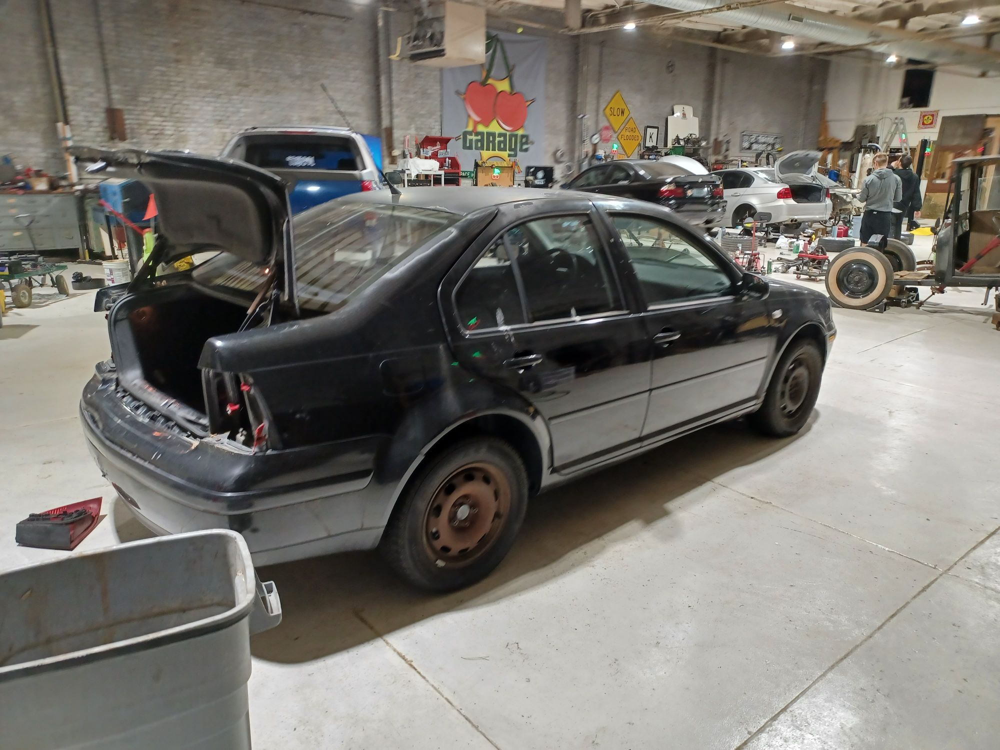
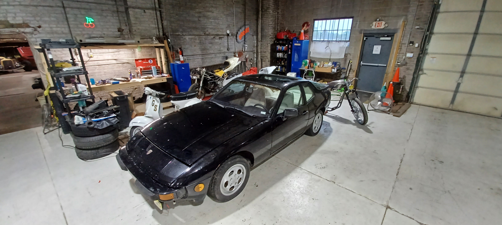
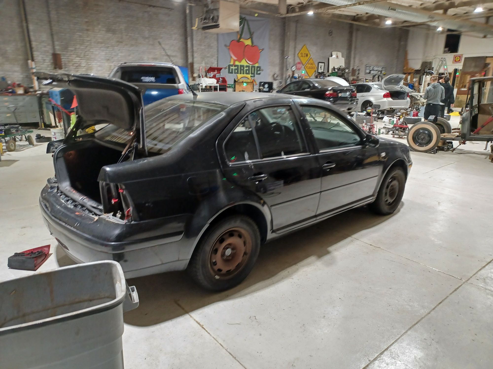
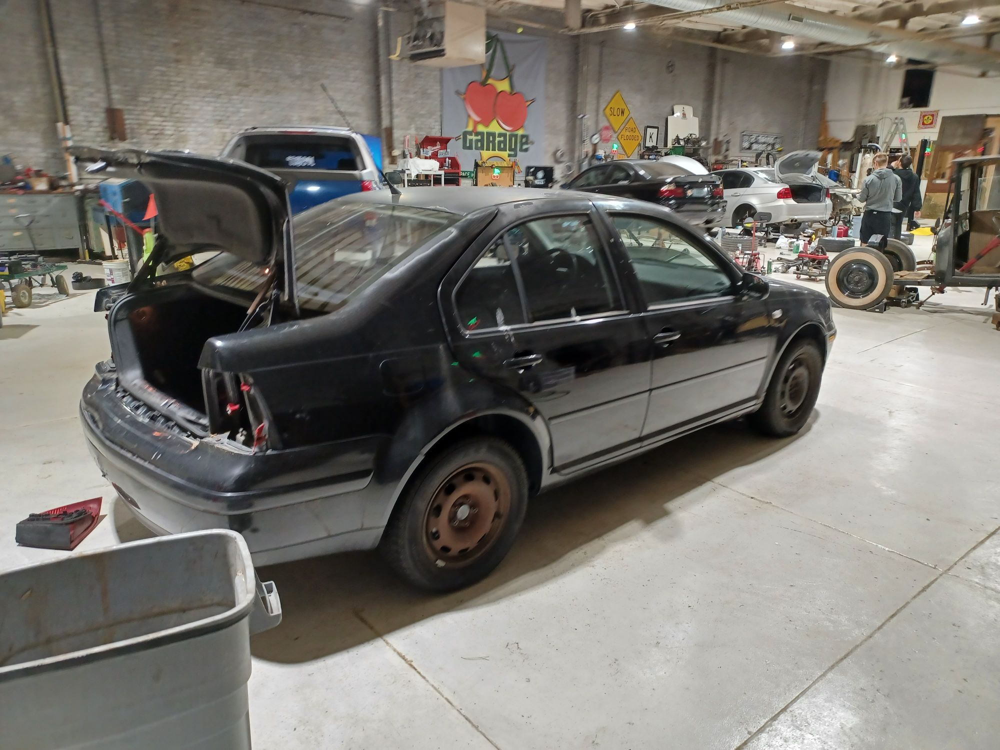

Hello, my name is Caleb, and I'm a "car guy". What that means is different to a lot of people, but by most definitions I've fallen pretty far into the deep end.
My dad has been a weird vehicle enthusiast, restoring historic vehicles and motorcycles since I've been little. Seeking a path to sink some free time and frustration in to a project rather than letting it boil over into my life decided to pick up the hobby.
The first crappy german car
So, first thing I did was find a terrible car, and rent a spot at a buddies garage to work on it. I had a lot to learn, and I had a lot of time. I picked up a old VW Jetta, and before I even got it home, I got rear ended at a stoplight.
Great start to the project.
Well, I learned a lot about bodywork getting it repaired(and that I hate doing it), learned how to go thru junkyards in the area for the parts I needed, and importantly got a handle on the fundamentals of working on the car. However, this car is at its heart, a turd. I loved it when I got to drive it, with its manual transmission and low power engine, I could drive the heck out of it without being reckless.
But all things have to come to an end. I knew that this wasn't a car I wanted to sink hundreds of hours into, so I went looking for something worthy of my time.

MK4 Volkswagen Jetta
A second, cooler, crappy german car

I went and sold the Jetta for a fair profit on what I put into it, and decided to sink that cash into a new project. I have a fascination with the 80's, especially car design. So I found a 1987 Porsche 924S.
The flip up headlights, the bullet shape, the weird giant hatch glass. It was awesome. It was also a bit of a nightmare. It had major mechanical issues, so I decided to do a ground up restoration of the engine.
When I was in the process of disassembling it. I pulled the engine completely out, and got to disassembling that as well. I discovered major issues with the block of the engine, the part that holds all the bits together, and the pistons. So getting this car back together and running was going to cost a lot.
I had another problem, the Title. the previous owner hadn't gotten it transferred, and I wasn't able to get it titled in my name. So I was staring down the barrel of a car I didn't 'own', and a ton of money I'd have to sink into getting it right again.
A third, even cooler, crappy german car
After some searching, I discovered another similiar car for sale near me. A Porsche 944, only 1 year older. It shared many of the internal components, including suspension, engine, transmission. The body style was very different though, with wide fender flares that gave it an aggressive feel.
I've spent the better 3 quarters of a year diving into this car. Its got its own problems, but I drove it into the shop, and I've done a ton of work on it. I've rebuilt the whole top end of the engine, and done countless other small jobs.
The car is back to running, but i've still got some issues to sort out before I'm able to drive it around and be confident in its reliablity. So until then, cya.
 
